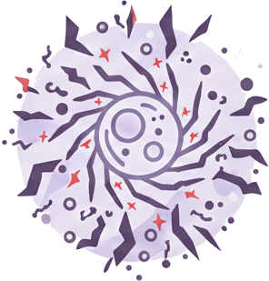
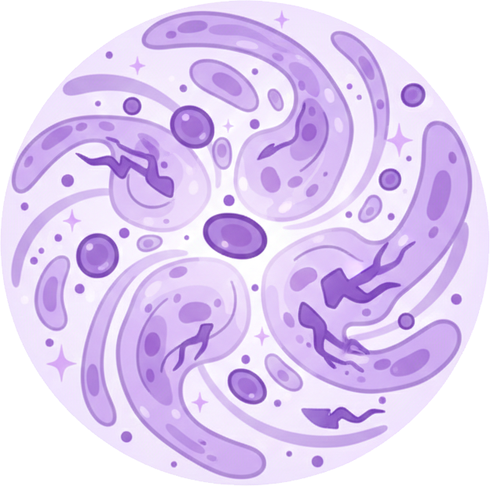

Cosmobella
Ciencia y naturaleza trabajando en equilibrio
Conoce cómo los compuestos naturales presentes en la flor Cosmos bipinnatus pueden apoyar el bienestar del organismo.

¿Qué es el estrés oxidativo?
El estrés oxidativo ocurre cuando existe un desequilibrio entre la producción de radicales libres y la capacidad del cuerpo para neutralizarlos mediante antioxidantes.
Los radicales libres pueden generarse por factores como el estrés, la mala alimentación, la contaminación y el ritmo acelerado de vida.
Cuando se acumulan en exceso, pueden contribuir al desgaste celular.
¿Qué es la inflamación crónica?
La inflamación es una respuesta natural del cuerpo. Sin embargo, cuando se mantiene por periodos prolongados, puede generar molestias persistentes y sensación de incomodidad corporal.
Factores como el estrés constante, hábitos poco saludables y cambios hormonales pueden influir en estos procesos.
Mantener un equilibrio adecuado es clave para el bienestar general.


El papel de los antioxidantes
Los antioxidantes ayudan a neutralizar radicales libres, apoyando la protección celular frente al daño oxidativo.
Integrar fuentes naturales de antioxidantes dentro de la rutina diaria puede formar parte de un estilo de vida enfocado en el equilibrio y el cuidado del cuerpo.
La flor Cosmos bipinnatus y sus compuestos naturales
Esta planta es reconocida por su riqueza en compuestos bioactivos presentes de manera natural.
Han sido estudiados por su potencial antioxidante y su contribución al equilibrio natural del organismo.
En Cosmobella utilizamos extracto cuidadosamente procesado para conservar sus cualidades en una presentación práctica.

Bienestar femenino y equilibrio hormonal
Durante distintas etapas de la vida pueden presentarse cambios hormonales que influyen en el equilibrio corporal.
Momentos como el ciclo menstrual, el posparto o la menopausia pueden acompañarse de variaciones en la sensación de inflamación o desgaste.
Cosmobella está diseñada como complemento dentro de una rutina saludable.
Integración en un estilo de vida saludable
El bienestar depende del equilibrio entre alimentación, descanso, actividad física y manejo del estrés.
Cosmobella forma parte de este enfoque integral, ofreciendo una alternativa práctica para apoyar el bienestar diario.